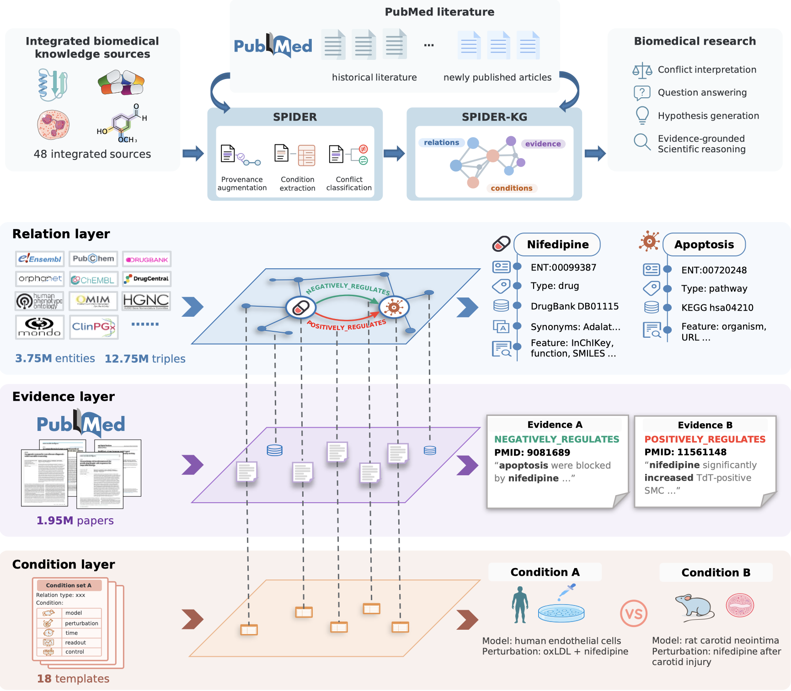
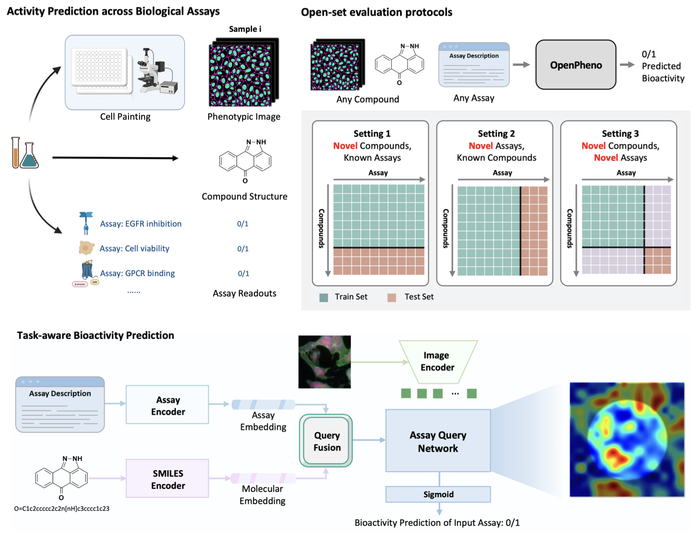

Research
We aim to build AI systems that bridge biological prediction and mechanistic discovery, enabling a deeper understanding of living systems and accelerating the discovery of new therapeutics.
Full Publication List
Understand
Knowledge-Guided Scientific Reasoning
Integrate biological knowledge and evidence to reason about molecular relationships and mechanisms.

SPIDER: Evidence-Grounded Biomedical Knowledge and Reasoning
SPIDER is a multi-agent framework that grounds biomedical knowledge graph relations in literature evidence and study conditions, helping distinguish contextual differences from genuine scientific disagreement.
The resulting SPIDER-KG connects biological relationships to their supporting evidence and experimental context, with daily updates from newly indexed PubMed records.
SPIDER improves the interpretation of conflicting findings, while SPIDER-KG supports evidence-grounded biomedical reasoning and helps contextualize emerging discoveries.
Predict
Biological Foundation Models
Model biological systems and predict their responses to perturbations.

MAP: A Knowledge-driven Framework for Predicting Single-cell Responses for Unprofiled Drugs
Jinghao Feng*, Ziheng Zhao*, Xiaoman Zhang*, Mingfei Liu, Jingyi Chen, Xingran Quan, Boyang Fu, Jian Zhang, Yanfeng Wang, Ya Zhang, Weidi Xie
Most existing models for predicting drug-induced single-cell responses fail to generalize beyond their training compound set, limiting in-silico screening to a narrow chemical space. MAP introduces a knowledge-driven framework that grounds predictions in molecular structure and biological pathway priors, enabling transcriptomic response prediction for drugs never seen during training. This opens the door to systematic in-silico screening across novel chemical libraries — a key step toward predictive, simulation-driven drug discovery.

Phenotypic Bioactivity Prediction as Open-set Biological Assay Querying
Yuze Sun*, Xiaoman Zhang*, Qiaoyu Zheng, Hanzheng Li, Jianming Zhang, Liang Hong, Yanfeng Wang, Ya Zhang, Weidi Xie
Phenotypic compound profiling is fundamentally open-ended: each new biological assay defines a new target space that models trained on fixed assay panels cannot handle. We reformulate phenotypic bioactivity prediction as an open-set retrieval problem in which assays themselves are treated as queryable entities. The resulting framework generalizes to unseen targets and assays, enabling scalable, hypothesis-free compound profiling at the scale needed for real-world screening campaigns.